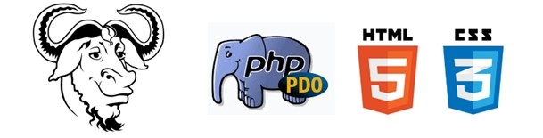
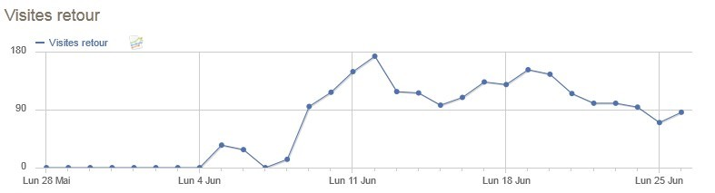

APOCALYSPACE VERSION 1
- SORTIE OFFICIELLE DEBUT 2013 -
- Découvrez-nous et partagez sur Twitter -
ApocalySpace est un jeu en ligne jouable gratuitement et directement sur votre navigateur web mêlant stratégie et gestion dans l'espace.
1 : Gratuit, libre et Français !
ApocalySpace est un projet libre Français, c'est-à-dire que tous les élèments du projet (code source, images ...) sont commentés dans la langue des Misérables[?] et sont réutilisables sous la licence GPL[?]. Mais attention, ce n'est pas n'importe quel projet libre : ApocalySpace, c'est avant tout un projet réalisé par trois étudiants[?] dans le cadre d'une réalisation technique pour l’école IN’TECH INFO[?] ; c'est donc un projet scolaire de niveau "semi-pro" !
Ce projet utilise les technologies du web les plus courantes : le PHP pour la dynamique, le SQL pour la relation avec la base de données, le HTML5/CSS3 pour le modelage du site et le JQuery pour l'animation. Vous pouvez dès maintenants accèder aux codes sources du jeu sur notre dépôt GitHub.

PHP, SQL, HTML5, LICENCE GPL: : QUE DU BEAU MONDE !
2 : Un univers unique
ApocalySpace est un Space Opéra[?] qui narre l'histoire suivante :
" Suite à un évènement apocalyptique, votre peuple est forcé de fuir sa planète natale à bord d'immense vaisseaux spatiaux en direction de l'espace stellaire infini.
Vous incarnez un homme. L'homme qui a réussi à trouver une planète viable pour son peuple !
Après des générations d'exile, vous voilà à la tête des rares survivants à l'agonie luttant contre l'extinction totale de votre nation. C'est à vous qu'incombe le pouvoir de reconstruire l'empire ! "
3 : Un gameplay fun et innovant
ApocalySpace n'est pas un jeu comme les autres.
Sa jouabilité simple et innovante vous permet d'imaginez vos vaisseaux, d'améliorez vos technologies pour construire de nouvelles pièces plus performantes les unes que les autres et d'administrer toute votre nation d'un simple clic : allez vous décider de gérer plus de mineurs que les autres joueurs pour produire une grosse quantité de minerai ou préférez vous solidifer votre technologie en misant sur des chercheurs ?
Il n'y a que vous pour faire ce choix.
APERCU DU NOUVEAU MENU DU JEU
4 : Une version BETA plus que réussie
D'une durée de plus de plus de 6 mois (la version BETA a été lancé le 4 Juin 2012) cette version BETA nous a permis de mettre en place la dynamique du jeu, de régler les différents taux généraux et surtout de recuillir vos avis. Cela a été un succès :
1 : Le jeu a connu plus de 130 inscriptions en moins de 3 semaines (+200 début Novembre)
2 : Plus de 2000 lectures des différents messages que nous avons pu envoyer sur les forums
3 : Lors de la sortie de la BETA, il y avait déjà plus de 20 000 lignes de code
4 : Un partenariat avec l'entreprise OwnWeb qui nous a permis de propulser notre jeu sur un puissant serveur

UNE DUREE MOYENNE DE 19 MINUTES POUR 86 ACTIONS SUR LE SITE PAR JOUR ET PAR PERSONNE
5 : Des avis bien sympatoches !
L'équipe au grand complet remercie tous les joueurs pour vos avis plus que positifs par rapport à notre jeu : en voici quelqu'un !
"Merci aux développeurs" de Own
"Je viens de commencé et je trouve le jeu sympa" de Yame
"Votre projet à l'air prometteur." de Hasar
"Bravo pour la mise en ligne du jeu." de Tyrius

VOS AVIS, EN GRANDE MAJORITE POSITIFS, ONT ETAIENT RECUEILLIS SUR DIFFERENTS FORUMS : MERCI !
6 : C'est quoi la suite ?
La BETA est officiellement clotûrée et le site est mis en stand-by jusqu'à la sortie de la version finale (la V1) d'ici Janvier/Février 2013.
Vous pouvez suivre l'avancement de cette version finale sur notre compte Twitter et sur notre page officielle Facebook (bientôt).
Julien Bernard (moi-même) a repris seul le développement du projet puisque les deux autres membres fondateurs ont souhaité quitter le projet.
Etant désormais seul, je vais légérement modifier le gameplay du jeu mais vous retrouverez très vite vos marques par rapport à la BETA je vous le promets :)
De même, le projet reste bien évidement sous licence libre (c'est un peu le but de la licence en même temps).
Merci à tous et à très bientôt.
Julien
ApocalySpace, tous droits réservés aux auteurs - 2012/2013 - Julien Bernard []